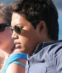
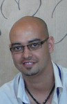
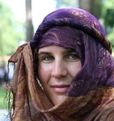
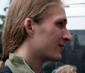

The team
We're Andreas, Armagan, Birgit and Lode, all placed in group A.
Andreas

- Firstname/lastname: Andreas Bernstein
- Date of birth: 2nd June 1983
- City/country: Ronneby, Sweden
- School/university: Mälardalen University
- Faculty/department: IDT
- E-mail: contact page
- Mobile-phone: +46 733 809 664
Professional interests
Illustration
Skills/specialization
Information design, graphical layout
Other personal info you want to share
I'm also interested in classical music and listen a lot to it. I get a lots energi from it!! As a person I'm usually quite happy and I like to spend time with friends and meet new people.
Armagan

- Firstname/lastname: Armagan Kösecioglu
- Date of birth: 29th April 1982
- City/country: Istanbul, Turkey
- School/university: Kadir Has University
- Faculty/department: Advertisement
- E-mail: contact page
- Mobile-phone: +90 506 86 48 143
Professional interests
Designing posters, businesscards with graphical programs like photoshop and freehand in leisure times. Working in a construction company as an advertisement and marketing manager. Working in an ice company as a salesman at Istanbul...
Skills/specialization
Design with adobe photoshop and macromedia freehand, using machitosh properly,making pop-ups and banner adv. by using macromedia flash mx. Use all ofiice programs like word, excel and powerpoint...
Other personal info you want to share
I like to search everything which I wonder in the world, traveling other countries to learn their culture, taking pictures with my camera and stock them all. I like different kind of music like soundtracks or the world ethnic musics. Like to play different insturments especially percussion. I believe the team work has a rhythm and all team members must catch the rhythm. Because of that I try to find the music of all team which Im in. I like to meet new people to learn how many different brain we have in the world. I mean the different perspectives are important for me. Swimming, reading, playing, talking and listen music, playing games, friends and the social activities together, working different jobs especially the part time ones, walking in the mornings at the weekend, go to cinema and theatre, especially the theatre, playing theatre as a player with my best friends from theatre club at university. Go picnic with my family and the friends etc....
Birgit

- Firstname/lastname: Birgit Flesch
- Date of birth: 12 July 1978
- City/country: Graz, Austria
- School/university: FH JOANNEUM - University of Applied Sciences
- Faculty/department: Media- and Interactiondesign
- E-mail: contact page
- Mobile-phone: +43 650 87 11 680
Professional interests
I would like to work with film somehow, maybe the Austrian film festival in Graz ...
Skills/specialization
...
Other personal info you want to share
addicted to film, travelling, swimming, language, karate and having fun :)
Lode

- Firstname/lastname: Lode Claassen
- Date of birth: 24 January 1985
- City/country: Alkmaar, Netherlands
- School/university: Utrecht School of the Arts
- Faculty/department: Interaction Design
- E-mail: contact page
- Mobile-phone: +31 6 57 157 653
- Extra: personal website / portfolio
Professional interests
I like to observer people, how they act, what they do, and why they do something. This results in a interest for usability and creating user-friendly artifacts. I also find joy in knowledge transfer in any way; teaching others what I know, documenting what I did and researching what others discovered, writing about this process and in this way give my knowledge back to the community.
Skills/specialization
I'm pretty good creating web-thingies in xhtml, css, php and mysql. Thus designing a user interface, let users put content up, collect this data, and represent it somewhere else in another way to the viewer. Im not skilled in computer design (as in graphics), I can draw (with a pencil) but not with the computer. I have a lot of knowledge of virtual 3D environments (MUVEs), mainly of the Active Worlds software.
Other personal info you want to share
Listening to music is important! A bit of everything; Eels, Enya, Iggy Pop, Ladytron, Manu Chao, Massive Attack, Matrix, Philip Glass, Ravi Shankar, St. Germain, Vangelis, and many more. Further I like cycling or walking or 'being' in the nature. In my spare-time I teach pupils how to create school projects in a virtual 3D world and I like to spend some time in these worlds myself to.
This page is last edited by group A at 16.45
Interaction Design Summer School 2008 at the Kadir Has University in Istanbul, Turkey
Group A: Andreas Bernstein, Armagon Kösecioglu, Birgit Flesch, Lode Claassen